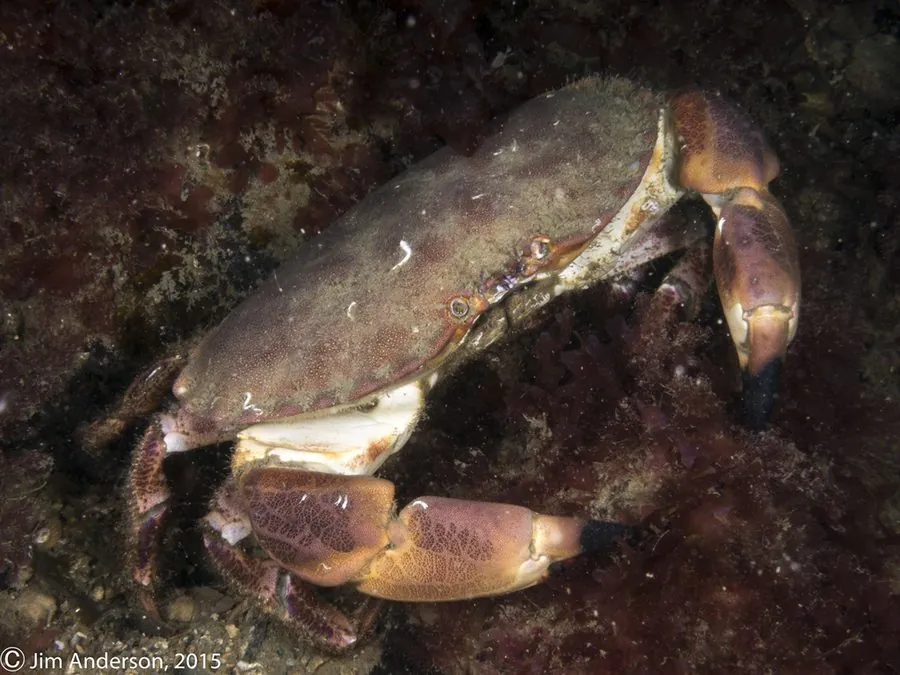

甲壳动物 · 动物界
黄道蟹 Cancer pagurus

欧洲大西洋沿岸的大型食用蟹，背甲宽厚呈椭圆、边缘有九枚锯齿，螯指尖端黑色，肉量饱满，是欧洲重要的经济蟹类。
- 分类
- 门节肢动物门纲软甲纲目十足目科黄道蟹科属黄道蟹属
- 栖息环境
- 潮下带至约 100 米深的岩礁、砾石与沙泥底，幼蟹多在浅水潮间带
- 地理分布
- 欧洲东北大西洋沿岸，从挪威至摩洛哥，以及地中海西部
- 保护级别
- IUCN 未评估；欧洲实施最小捕捞尺寸与禁捕期管理
物种志
黄道蟹甲宽可达 25 厘米，体重 1–4 千克，个别更大。背甲宽阔呈椭圆形，表面光滑、略隆起，呈红褐、橙褐至紫褐色，前缘两侧共有九枚圆钝的锯齿，这是识别它的重要特征；螯足粗壮，螯指末端呈黑色，步足末端尖细。腹部颜色较浅，雌蟹腹甲宽圆、雄蟹较窄尖。
它们分布于欧洲东北大西洋沿岸，从挪威北部至摩洛哥，并见于地中海西部，栖息于潮下带到约 100 米深的岩礁、砾石与沙泥底，幼蟹多在浅水潮间带，成蟹移向较深水域。夜行性，白天藏在岩缝与沙中，夜间出来捕食螺、贝、海胆、海星、小鱼与腐肉，靠强壮的螯夹碎贝壳。雌蟹在腹部抱卵，孵化期约 8–9 个月，幼体经浮游阶段后沉降。它是欧洲重要的经济蟹类，因肉质饱满被广泛用于蟹肉罐头与鲜食，捕捞受最小尺寸与禁捕期管理。
形态与习性
- 甲宽可达 25 cm，体重 1–4 kg
- 食性螺、贝、海胆、海星、小鱼与腐肉
- 栖息深度潮下带至约 100 m，幼蟹多在潮间带
- 背甲特征前缘两侧共九枚圆钝锯齿，表面光滑
- 螯指螯指末端黑色，夹碎贝壳有力
- 繁殖雌蟹腹部抱卵，孵化期约 8–9 个月
- 寿命可达 20 年以上
趣味知识
- 黄道蟹背甲边缘有九枚圆钝的锯齿，是辨认它的关键。
- 它的螯指尖端像点了墨一样是黑色的，夹碎贝壳毫不费力。
- 它是欧洲蟹肉罐头的主要原料，捕捞有严格的尺寸与季节限制。